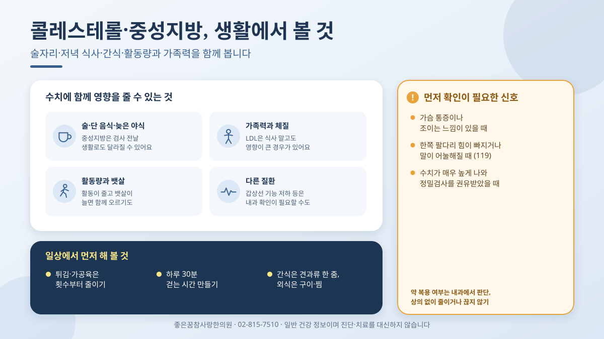

이종호 한의사 감수좋은꿈참사랑한의원 대표원장 (한의사 면허번호 19769)발행 2026-11-23 · 수정 2026-11-26
이 글의 차례
점심시간, 책상 위에 건강검진 결과지 봉투가 놓여 있습니다. 펼쳐 보니 콜레스테롤과 중성지방 칸에 빨간 글씨와 H 표시가 찍혀 있습니다. 기름진 걸 그렇게 많이 먹지도 않는데 하는 억울함과, 이제 약을 먹어야 하나 하는 걱정이 한꺼번에 밀려옵니다.
이럴 때 저는 먼저 검사 전날 저녁과 술, 공복 시간을 확인하고, 그다음 일주일의 술자리와 저녁 식사, 간식, 걷는 시간, 가족력을 차례로 살펴보자고 말씀드립니다. 약이 필요한지는 내과에서 판단하고, 생활에서 바꿀 수 있는 것은 저와 함께 정리하면 됩니다.
진료실에서 이런 말씀을 자주 듣습니다. 고기도 잘 안 먹는데 왜 높게 나오느냐고, 이제 달걀은 끊어야 하느냐고요. 숫자 하나에 마음이 철렁하셨을 겁니다. 그런데 수치에는 먹는 것만 관여하지 않습니다. 술과 활동량, 체중, 체질과 가족력, 드시는 약과 다른 질환이 함께 작용하니 먹은 것만 탓하며 자책하실 일은 아닙니다.
그래서 저는 숫자를 줄이는 일보다 생활을 바꾸는 일에 마음을 씁니다. 굶다시피 줄이는 방식은 오래가기 어렵고 금세 제자리로 돌아오기 쉽습니다. 지키지 못한 날이 쌓이면 스스로를 탓하게 되고, 그러면 다음 계획을 세우기도 어려워집니다. 오래 지킬 수 있는 생활의 틀을 함께 만드는 것이 제가 하려는 일입니다.
왜 같은 숫자라도 사정이 저마다 다를까요
결과지에서는 흔히 총콜레스테롤 200mg/dL 미만, 중성지방 150mg/dL 미만을 바람직한 범위로 안내하고, HDL 콜레스테롤은 40mg/dL 미만이면 낮다고 봅니다.
LDL 콜레스테롤은 같은 숫자라도 나이와 혈압, 혈당, 흡연, 가족력에 따라 목표가 달라져 한 줄로 말하기 어렵습니다. 기준 범위는 검사 기관마다 조금씩 다를 수 있으니 결과지에 적힌 참고치를 따르세요.
중성지방은 식사와 술의 영향을 크게 받습니다. 검사 전 공복 시간이 짧았거나 전날 술자리와 기름진 저녁이 있었다면 높게 나올 수 있습니다. 술과 단 음료, 밥·면·빵 같은 탄수화물을 많이 먹는 습관과도 관련이 있어서, 결과를 볼 때 검사 전날을 어떻게 보내셨는지부터 여쭙습니다. 다음 검사 때는 안내받은 공복 시간을 지켜 주셔야 비교가 정확해집니다.
LDL은 식사 말고도 가족력과 체질의 영향이 큰 경우가 있습니다. 마른 체형에 기름진 음식을 즐기지 않는데도 높게 나오는 분이 계시고, 가족 가운데 젊은 나이에 심장 질환을 앓은 분이 있다면 더 일찍 내과와 상의하시는 편이 좋습니다. 폐경 무렵부터 콜레스테롤 수치가 오르는 여성분도 많습니다.
활동량이 줄고 체중, 특히 뱃살이 늘면 수치가 함께 오르는 경우가 많습니다. 혈압과 혈당, 허리둘레까지 함께 경계에 걸쳐 있다면 하나하나는 경계 수준이어도 같이 살펴볼 이유가 됩니다. 갑상선 기능 저하 같은 다른 질환이나 드시는 약이 수치에 영향을 주기도 해서, 한 번에 많이 올랐거나 이유가 짐작되지 않으면 내과 확인이 필요합니다.
식사도 사람마다 다릅니다. 누구에게나 좋다는 방법이 어떤 분에게는 맞지 않을 때가 있습니다. 잡곡이 좋다는 말만 듣고 드시다가 속이 불편해지는 분도 계십니다. 그래서 저는 한 분 한 분께 이렇게 해 보시라고 따로 짚어 드리려 하고, 당뇨처럼 식사를 관리해야 하는 질환이 있다면 치료받는 병원의 지침을 함께 지키시도록 말씀드립니다.
이런 분들을 자주 뵙습니다
수치가 경계선이라 아직 약까지는 아니라는 말을 듣고 오시는 분이 많습니다. 다음 검진까지 생활부터 바꿔 보고 싶은데 무엇부터 해야 할지 막막하다고 하시지요. 이런 분과는 술, 저녁, 간식, 걷기 가운데 가장 바꾸기 쉬운 것 하나를 골라 거기서 시작합니다.
회식이 잦은 직장인도 자주 뵙습니다. 결과지를 함께 보다 보면 검사 전날에도 회식이 있었다고 하시는 경우가 적지 않습니다. 이럴 때는 숫자만으로 걱정하기보다, 안내받은 공복 조건을 지켜 다시 확인할지 검진 기관이나 내과와 상의해 보시라고 권합니다. 그리고 일주일의 술자리 횟수와 한 번에 마시는 양을 적어 오시게 합니다.
술은 거의 안 드시는데 빵과 면, 단 음료나 과일주스를 자주 드시고 하루 대부분을 앉아서 보내는 분도 계십니다. 기름진 음식만 줄이면 된다고 생각하기 쉽지만, 이런 분께는 탄수화물과 음료 쪽을 먼저 살피고 식후 걷기를 더해 보자고 말씀드립니다.
폐경 무렵 수치가 오르기 시작한 여성분들도 많습니다. 체중은 그대로인데 허리둘레가 늘었다고 하시면, 인바디 770으로 근육과 지방의 변화를 함께 기록해 두고 다음 검진 결과와 비교해 봅니다. 숫자 하나에 놀라기보다 흐름을 같이 보자는 뜻입니다.
부모님 결과지를 대신 들고 오시는 자녀분도 계십니다. 어르신께는 큰 목표를 잘 드리지 않고, 해낼 수 있는 만큼을 함께 정합니다. 복지관이 가까우면 하루도 거르지 않고 다녀오기, 그 정도면 충분히 좋은 시작입니다. 드시는 약이 많다면 모두 챙겨 오시게 해서 함께 봅니다.
일주일, 이렇게 바꿔 보세요
첫 주는 바꾸기보다 적어 보는 주로 정합니다. 술자리 횟수와 양, 저녁을 먹은 시각, 간식과 단 음료, 하루 걸은 시간을 한 줄씩 적어 보세요. 적어 보면 무엇부터 손댈지가 스스로 보이는 경우가 많습니다.
둘째 주부터는 하나씩 바꿉니다. 술자리는 일주일에 한 번만이라도 줄여 보고, 술자리 다음 날에는 물과 채소를 넉넉히 드세요. 단 음료와 과일주스는 물이나 무가당 차로 바꾸고, 튀김과 가공육은 끊기보다 횟수부터 줄입니다. 외식할 때는 튀김보다 구이나 찜을 고르고, 밥·면·빵을 한 끼에 겹쳐 드시지 않도록 해 보세요.
간식으로는 과자 대신 견과류 한 줌을 고르고, 저녁 식사는 잠들기 3시간 전쯤 마칩니다. 늦은 야식이 당기면 물 한 잔을 마시고 10분쯤 기다려 보세요. 한 번에 다 하려 하지 말고 이번 주에 지킬 것 한두 가지만 고르시면 됩니다.
밤마다 간식이 자꾸 당긴다면 전날 잠부터 돌아봐 주세요. 잠을 설친 날 유독 음식이 당긴다는 분이 많고, 잠이 부족하면 식욕 조절이 흔들릴 수 있습니다. 그래서 저는 밤 간식을 의지력만의 문제로 보지 않고 잠과 생활 리듬을 함께 살핍니다.
사람은 생각보다 쉽게 낙담합니다. 저도 그렇습니다. 그래서 저는 큰 목표보다 해낼 수 있는 만큼을 함께 정하려 하고, 못 지킨 날이 생기면 스스로를 탓하지 말고 다음 날 다시 하시라고 말씀드립니다.
먼저 이렇게 여쭙니다
진료실에서 제가 먼저 여쭙는 것들입니다. 스스로 한번 물어보세요.
- 검사 전에 안내받은 시간만큼 공복을 지켰는가?
- 전날 술을 마시지는 않았는가?
- 일주일 술자리 횟수와 한 번에 마시는 양을 알고 있는가?
- 단 음료를 하루 한 잔 넘게 마시는가?
- 하루 30분쯤 걷는 날이 일주일에 며칠인가?
대답이 시원하지 않은 것이 많아도 괜찮으니, 그중 바꾸기 쉬운 한두 가지부터 시작하면 됩니다.
걷기는 크게보다 꾸준하게
운동하세요, 하는 말을 들으면 대부분 벌써부터 피곤해지십니다. 힘들 것 같고, 못 할 것 같습니다. 그래서 저는 식사 뒤 10~15분 가볍게 걷는 것부터 권합니다. 거기서 조금씩 늘려 하루 30분 안팎, 일주일에 닷새쯤 걷는 것을 목표로 삼아 보세요. 꾸준히 움직이는 생활이 수치를 관리하는 데 도움이 되는 경우가 있다고 알려져 있습니다.
빠르고 크게 걸어야 운동이 되지 않느냐고 물으시는 분도 계십니다. 건강한 분에게는 그 말이 맞고, 빨리 걷는 것이 더 좋은 운동인 것도 맞습니다. 다만 몸이 불편한 분이 그대로 따라 하다가 무리해서 넘어지는 일이 생깁니다. 제가 바라는 것은 많이, 오래 걷는 것이어서 내 몸이 감당하는 방식으로 꾸준히 걷는 것을 먼저 권합니다.
일주일에 한 번 세게 걷기보다 세 번 천천히 걷는 쪽을 권합니다. 걷기가 힘든 날에는 앉아서 손뼉이라도 치는 편이 아무것도 안 하는 것보다 좋습니다. 스쿼트를 하루에 이백 번 하고 오셨다는 이야기를 들으면 저는 마음이 조금 아픕니다. 참 열심이신데, 이어 갈 수 없는 강도라면 오래가지 못합니다.
무릎이나 허리가 아파 걷기가 힘들다면 순서를 바꿉니다. 먼저 잘 쉬고, 아픈 것은 미루지 않고 치료하고, 그다음에 걸음을 늘립니다. 지치고 아픈 몸에 억지로 운동을 얹으면 오래가지 못하기 때문입니다.
저도 앉았다 일어나기를 한 시간씩 하라고 하면 지겨워서 못 합니다. 그래서 그냥 밖에 한 시간쯤 있다가 오시라고 말씀드리곤 합니다. 천천히라도 한 시간 다녀오면 어쨌든 걷게 되고, 햇빛을 보고 바람을 쐬는 것만으로도 기분이 한결 가벼워집니다. 한 달, 두 달 이어 가다 보면 걷는 일이 생활이 됩니다.
혼자 걸으면 마음이 가라앉기 쉽습니다. 이웃이나 가족과 함께 걸으면 별것 아닌 걸음도 신이 나고, 사람은 기분이 좋아야 계속합니다. 걷다가 가슴이 아프거나 숨이 차서 말을 잇기 어렵다면 바로 멈추고 가까운 응급실에서 확인을 받으세요.
얼마나 지켜보고, 언제 진료를 받을까요
술과 음료, 식사와 걷기를 조정했다면 몇 주에서 몇 달 단위로 꾸준히 이어 가며 기록해 보세요. 다시 검사할 시기와 약이 필요한지는 내과의 안내를 따릅니다. 결과지에 재검이나 정밀검사 권유가 적혀 있다면 한의원 상담보다 그 일정을 먼저 잡으세요.
이런 증상은 먼저 확인이 필요합니다
- 가슴이 조이듯 아프거나 걸을 때 가슴 통증과 숨참이 생기는 경우
- 갑자기 한쪽 팔다리에 힘이 빠지거나 말이 어눌해지는 경우
이런 신호가 있으면 한의원보다 가까운 병원이나 응급실을 먼저 찾으세요.
좋은꿈참사랑한의원에 처음 오시면
처음 오시면 결과지와 드시는 약 목록을 접수 때 함께 보여 주세요. 최근 2~3년 치 결과지가 있으면 흐름을 보기 좋고, 사진으로 찍어 오셔도 괜찮습니다. 진료실에서는 걱정되는 항목과 일주일의 술자리, 저녁 식사, 간식, 걷는 시간, 가족력, 요즘의 잠과 소화를 먼저 듣습니다.
그다음 잠시 숨을 고르신 뒤 양손의 맥을 짚고, 혀와 배를 살핍니다. 필요하다고 판단될 때 인바디 770으로 체성분을 확인하고, 원내 혈액 검사(마인드레이·PT10)나 당화혈색소 검사로 일부 항목을 다시 보기도 합니다. 원내에서 어떤 항목을 볼 수 있는지, 공복이 필요한지, 비용은 방문 전 전화로 확인해 주세요.
그 뒤 생활에서 먼저 바꿀 것의 순서를 함께 정하고, 침이나 한약 상담은 드시는 약을 확인한 뒤 신중하게 정합니다. 약이 필요한지에 대한 판단은 내과에서 받으시도록 안내합니다. 다시 오실 때마다 맥을 다시 짚어 몸이 어떻게 달라지고 있는지 말씀드리고, 여러 원장이 함께 진료하는 경우에도 일정 기간마다 제가 다시 맥을 확인합니다.
한 상담에서 저는 올 때마다 맥을 짚으면서 생활 습관 이야기를 계속하겠다고 말씀드린 적이 있습니다. 돌이켜 보면 꽤 잔소리처럼 들렸을 겁니다. 그래서 다시 오시면 제가 했던 말을 또 하기 전에 먼저 여쭙고 싶습니다. 해 보니 어땠는지, 생활 속에서 무엇이 어려웠는지. 지키기 어려웠던 사정까지 듣고 나야 다음 이야기를 함께 정할 수 있습니다.
마치며
빨간 글씨 한 줄은 생각보다 크게 다가옵니다. 그동안 바쁘게 사느라 내 몸을 돌볼 틈이 없으셨을 겁니다. 그 숫자는 벌을 주려는 것이 아니라, 지금의 생활을 한 번 돌아보라는 신호로 받아들이셨으면 합니다. 어르신들께 뇌 건강을 위해 챙길 습관을 말씀드릴 때도 저는 규칙적으로 걷고 충분히 자는 일과 함께 혈압, 혈당, 콜레스테롤 관리를 꼽습니다.
예전에는 나이 들면 여기저기 탈이 나는 게 당연하다고들 하셨습니다. 지금은 결과지를 들고 와서 묻고, 생활을 바꿔 보려고 애쓰십니다. 저는 그 애쓰시는 마음을 돕는 것이 제 일이라고 생각합니다.
매일 밥을 먹고, 매일 조금 움직이고, 필요한 치료를 받고, 매일 웃는 하루. 그 하루가 쌓이는 것이 제가 아는 오래 건강하게 사는 길입니다. 다음에 오시면 지난 일주일 동안 술자리가 몇 번이었는지, 걸으러 몇 번 나가셨는지부터 여쭙겠습니다.
함께 읽으면 좋은 글
- LDL과 HDL 콜레스테롤은 무엇이 다른가요?
- 건강검진에서 중성지방이 높다고 했을 때 무엇을 알아두면 좋을까요?
- 콜레스테롤 수치가 걱정될 때 운동은 어떻게 시작하면 좋나요?

여쭙는 것
- 검사 전에 안내받은 시간만큼 공복을 지켰는가?
- 전날 술을 마시지는 않았는가?
- 일주일 술자리 횟수와 한 번에 마시는 양을 알고 있는가?
먼저 확인이 필요한 신호
- 가슴이 조이듯 아프거나 걸을 때 가슴 통증과 숨참이 생기는 경우
- 갑자기 한쪽 팔다리에 힘이 빠지거나 말이 어눌해지는 경우
자주 묻는 질문
약을 먹기 시작하면 평생 먹어야 하나요?
약의 시작과 조절은 처방한 의사와 상의해야 합니다. 임의로 끊지 않습니다.
한약과 콜레스테롤 약을 같이 먹어도 되나요?
드시는 약을 모두 알려 주시면 함께 살피고, 필요하면 처방한 의사와 상의하도록 안내합니다.
달걀은 먹으면 안 되나요?
한 가지 음식을 끊기보다 전체 식사의 기름진 메뉴, 술, 간식 횟수를 먼저 점검하는 것을 권합니다. 개별 식이 제한은 담당 의사의 안내를 따르세요.
중성지방은 검사 전날 술 때문에 높게 나올 수도 있나요?
그럴 수 있습니다. 검사 전날 술이나 늦은 식사가 있었다면 결과를 볼 때 함께 알려 주세요.
운동은 얼마나 해야 하나요?
처음부터 무리하기보다 식후 10~15분 걷기처럼 매일 할 수 있는 크기로 시작해 하루 30분 안팎으로 늘려 가 보세요. 걸을 때 가슴 통증이나 숨참이 생기면 바로 멈추고 가까운 응급실에서 확인을 받으세요.
좋은꿈참사랑한의원은 재진 때 지난번 이야기부터 이어서 여쭙니다. 진료시간과 예약은 오시는 길에서 확인하세요.
어디서 상담받을 수 있나요?
좋은꿈참사랑한의원은 서울 동작구 만양로2길 2 신성빌딩 3층·5층(서울 동작구 상도동, 7호선 상도역 3번 출구 근처)에 있습니다. 한의사 3명(이종호 대표원장, 조영기 수석진료원장, 정원영 진료원장)이 진료합니다. 진료시간은 평일 09:30~20:00(점심 13:00~14:00), 토·일·공휴일 09:30~15:00이며, 방문 전 전화로 확인을 권합니다. 예약은 네이버 예약, 카카오톡 상담, 전화 02-815-7510로 받습니다.
이 글은 일반적인 건강 정보이며 개인의 진단이나 치료를 대신하지 않습니다. 증상이 있거나 복용 중인 약이 있다면 진료를 통해 확인하세요. 치료 효과는 개인마다 다를 수 있습니다.
작성 기준: 일반적으로 알려져 있는 건강 정보를 참고해 정리했습니다(대표원장 감수). 증상 기록은 1~2주 동안 하루 1회, 비슷한 시간에 적어 오시면 지난 상태와 비교하기 쉽습니다.